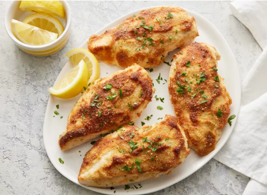

Italian Sausage

Delicious Italian Sausage
Ingredients
- 6 (4 ounce) links sweet Italian sausage
- 2 tablespoons butter
- 1 medium yellow onion, sliced
- ½ medium red onion, sliced
- 4 cloves garlic, minced
- 1 large red bell pepper, sliced
- 1 medium green bell pepper, sliced
- 1 teaspoon dried basil
-
Cook sausage in a large skillet over medium heat until brown on all
sides, 5 to 7 minutes. Remove from skillet, and slice.
-
Melt butter in the same skillet. Stir in onions and garlic, and cook 2
to 3 minutes. Mix in bell peppers, season with basil and oregano, and
stir in 1/4 cup wine. Continue to cook and stir until peppers and onions
are tender, 5 to 7 minutes.
-
Return sausage slices to the skillet. Reduce heat to low, cover, and
simmer 15 minutes, or until sausage is heated through, adding more wine
if needed.
- Serve hot and enjoy!